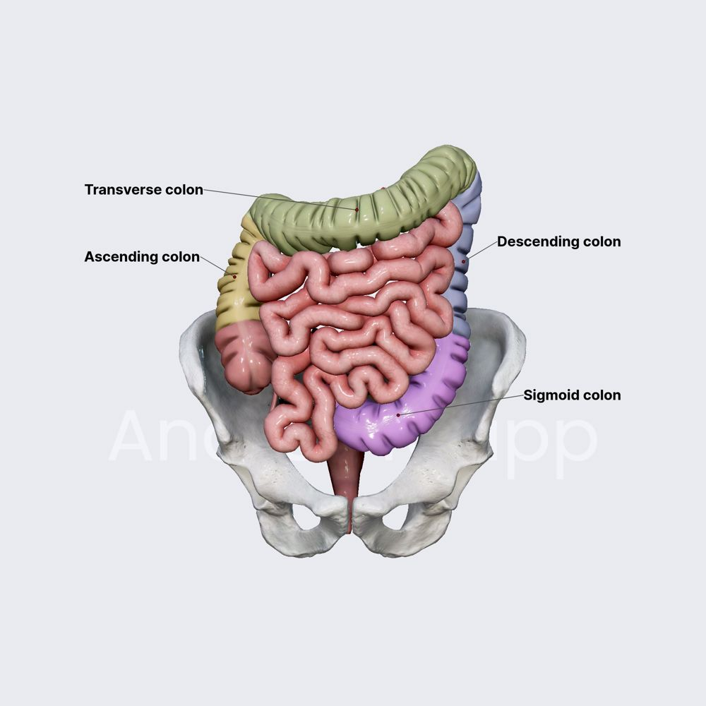
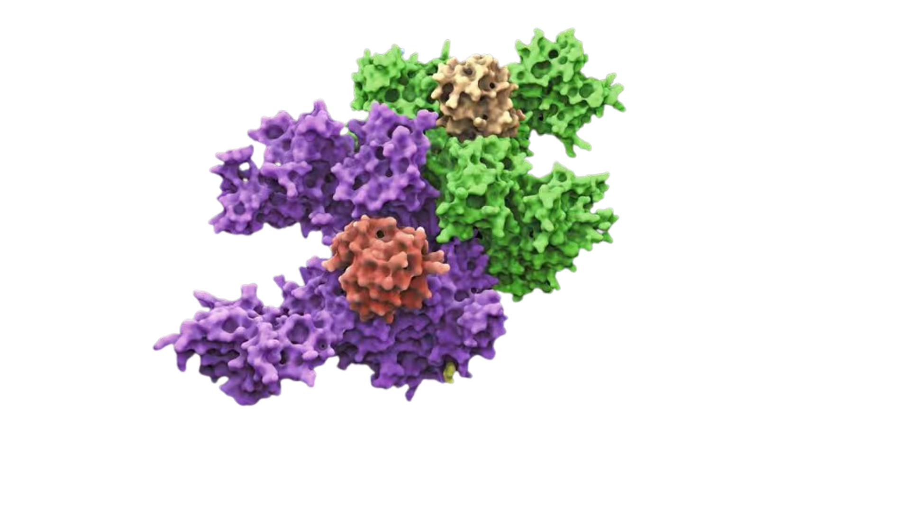

PART 1
RESEARCH
Understanding the biological problem
before analyzing the data.
Why Does This Matter?
Colon cancer is one of the most common
cancers worldwide. It develops when
changes in cells disrupt normal growth
and function.
1.9M+
New cases worldwide each year
900K+
Deaths worldwide each year
#3
Most common cancer worldwide

Common Symptoms
Diarrhea or Constipation
Blood in Stool
Abdominal Pain
Unexplained Weight Loss
Fatigue & Low Iron Levels
About Colon Cancer
Colon cancer develops in the large intestine (colon),
usually from small growths called polyps, and most
commonly affects adults over 50.
Risk Factors
- High intake of processed meats
- Low intake of fruits and vegetables
- Sedentary lifestyle
- Obesity
- Family history
Many people show no symptoms during
early stages, making detection difficult.
Early Diagnosis Matters
Treatments are much more effective when
colon cancer is detected early.
Screening
Regular screening can detect cancer
before symptoms appear.
→
Surgery
Often used when tumors are detected
at earlier stages.
→
Other Treatments
Includes chemotherapy, radiation,
targeted therapy, and immunotherapy.
What Is Gene Expression?
Almost every cell contains the same DNA,
but different cells activate different
genes to perform specialized functions.
DNA
Genetic instructions

↓
mRNA
Copied instructions

↓
Protein
Functional molecules

↓
Cell Behavior
Growth, repair, and function

What Does It Mean For A Gene To Be
"Turned On" Or "Turned Off"?
Gene Turned On
More active genes produce more mRNA and proteins.
Higher Gene Expression
Gene Turned Off
Less active genes produce fewer mRNA and proteins.
Lower Gene Expression

Cancer can disrupt normal regulation,
causing some genes to become unusually
active while others become inactive.
How Can We Measure Gene Expression?
DNA microarrays measure the expression
levels of thousands of genes at the same
time.
How Does A DNA Microarray Work?
Collect
Samples

↓
↓
Convert RNA
into cDNA

↓
Add
Labels

↓
Bind cDNA to
Microarray Chip

↓
Analyze
Expression Data

// NOTE MOVE TO ANOTHER SECTION
Our Research Question
Which genes are expressed differently
in colon cancer compared with healthy
colon tissue?
By comparing gene expression patterns,
we can identify important biological
changes associated with cancer.